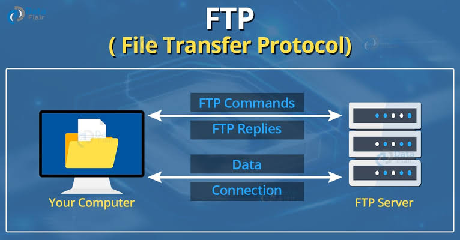

Welcome to my final portfolio for the Internet Course. This website serves as a comprehensive showcase of my learning journey through Modules 1-4, highlighting my favorite concepts, new technical skills, and my project planning process.
My favorite topic in this course was learning about Near Field Communication (NFC) and emerging tech frontiers. Unlike visual camera scanning or broader Radio Frequency Identification (RFID) systems, NFC operates on a restricted, short-range wireless frequency requiring close proximity—typically 4 inches or less. It is fascinating how NFC tags use small, inexpensive, unpowered microchips that draw operational energy directly from a scanning device through magnetic induction. When you bring a smartphone near an NFC tag, the phone's magnetic field powers the chip and instantly transfers data without needing camera focus. Learning how this seamless, friction-free process enables secure "tap-and-pay" transactions and instant document sharing completely changed how I view everyday contactless technology
Computer science requires looking past today's tech tools to evaluate the disruptive systems shaping future industries. Key areas transforming our society include machine learning models, autonomous vehicle pathfinding, uncrewed aerial vehicles (drones), automated manufacturing, and 3D printing. These systems solve complex computational problems but also introduce critical new privacy, cybersecurity, and systemic ethical vulnerabilities.
Read Article: What's an NFC Tag
One of the most helpful videos I used to understand NFC Technology in Depth
While I understand its absolute importance for web administration and software development, I found the deep dive into FTP mechanics to be a bit dry. Memorizing the strict sequence of authentication, navigation, and transfer interchange using specific clients like FileZilla and WinSCP felt tedious compared to the exciting, futuristic concepts in Module 3.

File Transfer Protocol.
Have any questions about my portfolio? Send me a message below!
Or email me directly at: emarsh@stu.ctcd.edu